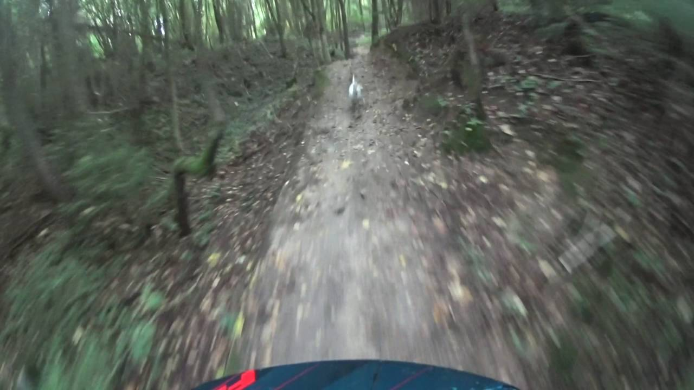

Miske.lt | Medžioklė Lietuvoje
2020.10.29 07:08

Pradžia Naujienos Straipsniai Vaizdo įrašai Kalendorius Kita Informacija Klubų ribos Medžiojame Naudinga Receptai Kontaktai Autoriams Reklama Išvaizda Šviesi Tamsi Vaizdo įrašai
Axion XQ38 ir XQ38LRF
PlačiauAkimirkos iš Kauno raj. vykusios medžiotojų šventės
Spaudos konferencija dėl švino šaudmenų draudimo
Naujienos 2020.10.27 2020.10.27Medžiotojas į medžioklę vežėsi naktinio matymo prietaisą
Aplinkos apsaugos departamento Imuniteto tarnybos ir Lietuvos kelių policijos tarnybos pareigūnai Švenčionių rajone sulaikė medžiotoją, į medžioklę pasiėmusį draudžiamą A
Naujienos 2020.10.27 2020.10.27Rekomendacijos medžioklėms Covid-19 epidemijos metu
Šalyje toliau daugėjant užsikrėtimų Covid-19 virusu atveju, rekomenduojame imtis visų saugos priemonių rengiant medžiokles ir ypač medžiokles varant, kuriu metu susirenka didesnis medžioklės dalyvių
Naujienos 2020.10.22 2020.10.22Sulaikius medžiotojus rastas daiktas, panašus į šautuvo duslintuvą
Trečiadienį, spalio 21 d., Aplinkos apsaugos departamento Imuniteto tarnybos ir Lietuvos kelių policijos tarnybos pareigūnams Švenčionių rajone įkliuvo du medžiotojai .
Naujienos 2020.10.22 2020.10.22Jau sumedžiota nemažai vilkų
Vilkų medžioklės sezonas prasidėjo prieš savaitę, bet jau yra sumedžioti net 23 vilkai. Kiti 7 vilkai buvo rasti partrenkti automobilio
Vaizdo įrašai 2020.10.21 2020.10.21Lakstymas po miškus su šunimis naktį ir šaudymas yra ok?
Praeitą savaitę išleistos naujos medžioklės taisyklės, tačiau dažnas medžiotojas pasigedo svarbių punktų kurie turėjo būti naujose medžioklės taisyklėse ir nesuprato
Straipsniai 2020.10.20 2020.10.20Stumbrai ir medžioklės taisyklių niuansai
Spalio mėnuo. Kaip niekad šiltos dienos ir naktys, nepriklausomai nuo rinkimų rezultatų gamta gyvena savo ritmu. Miškuose dar auga miškinukai,
Naujienos 2020.10.20 2020.10.20AKM atvejai už praeitą savaitę
Valstybinė maisto ir veterinarijos tarnyba (toliau VMVT), vykdydama Ministro Pirmininko pavedimą, įformintą Vyriausybės kanclerio 2014-03-06 rezoliucija Nr. 13-888, informuoja,
Vaizdo įrašai 2020.10.17 2020.10.17Kaišiadorių rajone užfiksuota meška
Vakar Kaišiadorių rajone, netoli Palomenės kaimo, medžiotojų klubo “Palomenys” medžiotojui Daliui Katinui pavyko užfiksuoti mešką, kuri išlindo jam po bokšteliu.
Naujienos 2020.10.15 2020.10.15Pakeistos medžioklės taisyklės
Aplinkos ministras pasirašė įsakymą dėl Lietuvos Respublikos aplinkos ministro 2000 m. birželio 27 d. įsakymo Nr. 258 „Dėl Medžioklės Lietuvos
Naujienos 2020.10.14 2020.10.14Per medžioklės sezoną leista sumedžioti 175 vilkus
Aplinkos ministerija šiam, 2020-2021 m., medžioklės sezonui, kuris prasidės rytoj, spalio 15 d., nustatė 175 vilkų sumedžiojimo limitą. Toks limitas
Vaizdo įrašai 2020.10.13 2020.10.13Už per klaidą paleistą šūvį šratais į kanopinį žvėrį smarkiai nebaus
Po vakarykščio video apie draudimą medžioti kanopinius žvėris su šratais ir grankulkėmis, užvirė karštos diskusijos ne tik tarp medžiotojų, bet
Naujienos 2020.10.13 2020.10.13Spalio mėn. jau 5 AKM atvejai
Valstybinė maisto ir veterinarijos tarnyba (toliau VMVT), vykdydama Ministro Pirmininko pavedimą, įformintą Vyriausybės kanclerio 2014-03-06 rezoliucija Nr. 13-888, informuoja,
Vaizdo įrašai 2020.10.12 2020.10.12Draudžiama medžioti kanopinius žvėris su šratais ir grankulkėmis
Medžioklės varant prasideda nuo spalio 15d., todėl skubame priminti medžioklės taisyklių pakeitimą, kuris draudžia medžioti kanopinius žvėris su bet kokio
Straipsniai 2020.10.09 2020.10.09Vieno vakaro medžioklė
Diena buvo graži, švietė saulė, tik buvo didelis vėjas, o orų prognozė rodė, kad vakaras taip pat bus geras be
Naujienos 2020.10.08 2020.10.09Akimirkos iš Kauno raj. vykusios medžiotojų šventės
Praeitą savaitgalį įvyko šventė Kauno medžiotojų sąjungos 100-mečiui paminėti. Šventė vyko Kauno raj. Raudondvario dvare. Į šventę susirinko gausus būrys
Naujienos 2020.10.02 2020.10.02Planuojama leisti sumedžioti 175 vilkus
Šią savaitę aplinkos ministerija paskelbė projektą dėl vilkų medžioklės limito. Įvertinus, kad Lietuvoje yra ne mažiau kaip 54 vilkų šeimos,
Straipsniai 2020.09.29 2020.10.09Medžiotojo dienos dzūkijoje rugsėjo mėnesį
Š.m. Rugsėjis žavi savo stebuklais. Žemdirbys seniai turėjo tokį puikų grūdinių kultūrų ir bulvių derlių, linksta šakos nuo obuolių, kriaušių,
Naujienos 2020.09.28 2020.10.09Kauno raj. įvyks medžiotojų šventė
Spalio 3 d. Raudondvario dvare vyks šventė “Senieji amatai ir medžioklė ”, skirtą Kauno medžiotojų sąjungos 100-mečiu paminėti. Kviečiame visus
Naujienos 2020.09.25 2020.09.25Už neteisėtą medžioklę brakonieriams teks atlyginti iki 7 tūkst. eurų
Akcija „Medžioklė“ duoda rezultatų. Rugsėjo 23 d. Aplinkos apsaugos departamento Šiaulių gyvosios gamtos apsaugos inspekcijos pareigūnai kartu su Kelmės r .
Vaizdo įrašai 2020.09.22 2020.09.29Axion XQ38 ir XQ38LRF
Šioje laidoje apžvelgsime naujus “Pulsar Axion XQ” termovizorius, pakalbėsime apie jų technines savybes bei išbandysime medžioklės sąlygomis. Antroje laidos dalyje
Naudinga 2020.09.21 2020.09.21Šiemet pažeidėjai valstybei jau sumokėjo daugiau nei milijoną eurų
Per aštuonis š. m. mėnesius pažeidėjai valstybei jau sumokėjo, kaip praneša Aplinkos apsaugos departamentas prie Aplinkos ministerijos (AAD), daugiau nei
Naujienos 2020.09.21 2020.09.21Ruošiamas “LMŽD” kalendorius 2021 metams
Lietuvos medžiotojų ir žvejų draugija artimiausiu metu planuoja išleisti kalendorių medžiotojams 2021 m. Šiuo metu aiškinamasi koks yra poreikis ir
Naujienos 2020.09.18 2020.09.18Neskaidrus konkursas medžiotojų įvaizdžiui gerinti?
Lietuvos Respublikos aplinkos ministerija skelbia viešą konkursą dėl Medžioklės etikos ugdymo ir atsakingo elgesio naudojant Lietuvos fauną skatinimo per TV
Naujienos 2020.09.18 2020.09.18AKM plinta Europoje: nauji židiniai fiksuojami Vokietijoje, Lenkijoje ir Rumunijoje
Valstybinė maisto ir veterinarijos tarnyba (VMVT) informuoja, kad afrikinis kiaulių maras (AKM) toliau plinta Europoje, šią savaitę apie naujus viruso
Naujienos 2020.09.16 2020.09.16Prasideda akcija „Medžioklė“
Vakar Aplinkos apsaugos departamentas tauriųjų elnių ir briedžių apsaugai stiprinti intensyviausiu jų rujos metu pradėjo akciją „Medžioklė“. Mat rujodami šie
Naujienos 2020.09.15 2020.09.15Medžiotojų internetinės apklausos dėl Afrikinio kiaulių maro kontrolės atsakymų apibendrinimas
Norime padėkoti visiems aktyviai apklausoje dalyvavusiems medžiotojams ir skubame pasidalinti gautais apklausos rezultatais. Šiuo metu dar apibendrinami Jūsų pateikti atviro
Naujienos 2020.09.08 2020.09.08Dzūkijos krašto medžioklės trofėjų paroda
Šių metų rugsėjo 03 dieną Alytaus kraštotyros muziejuje buvo atidaryta Dzūkijos krašto medžioklės trofėjų paroda. Ši 2020 metų medžioklės trofėjų
Straipsniai 2020.09.08 2020.10.09Kada Lietuvoje įkurtos Medžiotojų draugijos
Medžioklės klausimų kuravimas atkūrus 1918 m. nepriklausomybę buvo pavestas tų metų pabaigoje pradėjusiai funkcionuoti Žemės ūkio ir valstybės turtų ministerijai,
Straipsniai 2020.09.07 2020.09.07Aukšto lygio medžioklės kultūros renginys
Kitaip nepavadinsi. Prieš dešimtmetį puikioje Vyganto Vaišnoro pirmiausiai medžioklei skirtoje valdoje, pavadintoje „Stalų trikampis“, pastatyta Šv. Huberto koplytėlė, kurią pašventino
Vaizdo įrašai 2020.09.04 2020.09.29Spaudos konferencija dėl švino šaudmenų draudimo
Šiandien įvyko spaudos konferencija dėl švino šaudmenų naudojimo šlapžemėse. Konferencijoje kalbėjo Raimondas Ribačiauskas, Lietuvos medžiotojų sąjungos „Gamta“ prezidentas, Vidas Silvestravičius,
Naujienos 2020.09.03 2020.09.03Europos Komisija priėmė švino šaudmenų draudimą šlapžemėse
Šiandien, rugsėjo 3 d., “REACH” komiteto metu kvalifikuotos balsų daugumos Komisijos pasiūlymas buvo priimtas. Kad pasiūlymas būtų priimtas reikėjo pasiekti
Naujienos 2020.09.02 2020.09.02Dėl aplinkos apsaugos agentūros formuojamos vyriausybinės pozicijos EK REACH komitete
2020 m. rugpjūčio 28 d. (penktadienį) Aplinkos apsaugos agentūra savo raštu Nr. (14)-A4E-7545 informavo nevyriausybines organizacijas apie savo nuožiūra suformuotą
Naujienos 2020.09.01 2020.09.01Simonas Gentvilas kreipėsi dėl švino šaudmenų naudojimo šlapžemėse
Seimo narys Simonas Gentvilas kreipėsi į Aplinkos ministrą Kęstutį Mažeiką ir Aplinkos apsaugos agentūros direktorių Rimgauda Špoką, bei kitus atsakingus
Naujienos 2020.08.31 2020.08.31Teismo sprendimas: už neteisėtai sumedžiotus elnius – per 19 tūkstančių eurų
Aplinkos apsaugos departamento Kauno valdybos Gyvosios gamtos apsaugos inspekcijos pareigūnų sulaikytas asmuo, neteisėtai sumedžiojęs tris elnius, teismo sprendimu už gamtai
Naujienos 2020.08.31 2020.08.31Dėl draudimo naudoti švininius šaudmenis šlapžemėse
Informuojame, kad 2020 m. rugsėjo 3 d. organizuojamas Europos Komisijos komiteto dėl cheminių medžiagų registracijos, įvertinimo, autorizacijos ir apribojimų reglamento
Naujienos 2020.08.27 2020.08.27Mokslininkai kviečia į susitikimus dėl AKM
Lietuvoje Afrikinis kiaulių maras (toliau AKM) yra jau 6 metus ir toliau kelia didelius nuostolius bei nepatogumus medžiotojams, kiaulių laikytojams
Naujienos 2020.08.26 2020.08.26Sodyboje apsigyvenę du šerniukai į mišką grįžti nebenorėjo
Penktadienį, rugpjūčio 21 d., į Aplinkos apsaugos departamento Klaipėdos gyvosios gamtos inspekciją kreipėsi Dabrupinės medžiotojų būrelio pirmininkas dėl viename Tauragės
Naujienos 2020.08.24 2020.08.24Seminaras „vokiečių vižlai – universalūs medžiokliniai šunys“
Jei medžiojate dažnai ir įvairiais būdais, jei medžioklės plotuose praleidžiate 3 ir daugiau dienų per savaitę, jei jūsų medžioklės sezonas
Naujienos 2020.08.24 2020.09.29Už ką planuoja balsuoti medžiotojai apklausos rezultatai
Praeitą savaitę paskelbėme apklausą “Už kurią partiją planuojate balsuoti šių metų rinkimuose į Lietuvos Respublikos seimą?” kur medžiotojai galėjo pareikšti
Vaizdo įrašai 2020.08.23 2020.09.29Stambiųjų plėšrūnų registravimas visus metus
Medžiotojai jau yra susipažinę su “Biomon.lt” stambiųjų plėšrūnų registravimo sistema. Šioje sistemoje vykdoma žvėrių apskaita pagal pėdsakus sniege, registruojami sumedžioti
Geriausiai įvertinti
4.9 (252)Spaudos konferencija dėl švino šaudmenų draudimo
4.9 (139)Politikų neišmoktos pamokos gali brangiai kainuoti
4.9 (129)Simonas Gentvilas kreipėsi dėl švino šaudmenų naudojimo šlapžemėse
4.9 (105)Dėl aplinkos apsaugos agentūros formuojamos vyriausybinės pozicijos EK REACH komitete
4.8 (96)Atvirkštinė, t.y. nekaltumo, įrodinėjimo pareiga tampa norma?
4.8 (72)Manevrai dėl švino šaudmenų naudojimo šlapžemėse
4.8 (116)Karštos naujienos, arba kas apgins medžiotoją?
4.8 (61)Turime rasti subalansuotą sprendimą dėl šaudmenų su švinu draudimo šlapžemėse
4.8 (87)Už ką planuoja balsuoti medžiotojai apklausos rezultatai
4.6 (29)Medžiojam stirniną miške
Naujausi komentarai
Algirdas apie Simonas Gentvilas kreipėsi dėl švino šaudmenų naudojimo šlapžemėse Deividas apie Medžiotojas į medžioklę vežėsi naktinio matymo prietaisą Belas apie Medžiotojas į medžioklę vežėsi naktinio matymo prietaisą Gintaras apie Medžiotojas į medžioklę vežėsi naktinio matymo prietaisą Rumantas apie Medžiotojas į medžioklę vežėsi naktinio matymo prietaisą Miske.lt - Medžiotojams apie medžioklę Aukštyn Mes naudojame slapukus, kurie užtikrina, kad Jums bus patogu naudotis tinklalapiu. Jei toliau naršysite mūsų tinklalapyje, tai tolygu Jūsų sutikimui su slapukų naudojimu. Gerai- Superkompaktiškas termovizorius AXION | Medžioklė
- Ančių Medžioklė - Kur pavalgyti? Maisto apžvalgos, kritika ...
- Filmai internetu, filmai online, nemokami filmai
- Medžioklė / The Hunt (2020) online
- Medžioklė - Ūkininko patarėjas
- Prasideda akcija „Medžioklė“ | Miske.lt
- Medžioklė / The Hunt 2020 online lietuvių kalba
- Medžioklė / The Hunt (2020) » Filmai ir serialai online ...
- Medžioklė - vertimai, sinonimai, gramatika, statistika ...
- Žiūrėti Raudonojo Spalio Medžioklė Online nemokamai
- Superkompaktiškas termovizorius AXION | Medžioklė
Medžioklė / The Hunt (2012) BDRip. Kraujas ir šokoladas. Dramos, Romantiniai, Fantastiniai, Siaubo, Filmai. 2007. 1 val 38 min. Kraujas ir šokoladas / Blood and Chocolate (2007) DVDRip.
- Ančių Medžioklė - Kur pavalgyti? Maisto apžvalgos, kritika ...
GERAS FILMAS Medžioklė / The Hunt 2020 online lietuvių kalba nemokamai HD kokybė. Žiūrėkite naujausią filmą NEMOKAMAI. Vienas žiurimiausių filmų Lietuvoje.
- Filmai internetu, filmai online, nemokami filmai
Gero termovizoriaus reikėtų kiekvienam medžiotojui, norinčiam medžioti ne tik sėkmingai, bet ir etiškai. Jis padeda prieš šūvį įsitikinti, ar prie viliojimo vietos priėjusios šernės aukštoje žolėje neseka jaunikliai, kiek apskritai bandoje šernų, kuris didesnis, kuris mažesnis. Su Axion gyvūną galima įžiūrėti ir per gana tankius krūmus, tad galima pasirengti jo ...
- Medžioklė / The Hunt (2020) online
Filmas sukurtas pagal 1984 m. JAV išleistą (ir išverstą į lietuvių kalbą) Tomo Clancy knygą „Raudonojo spalio“ medžioklė“, kuri tapo bestseleriu. Romanas ir filmas sukurti pagal tikrus įvykius.
- Medžioklė - Ūkininko patarėjas
Ančių Medžioklė - maisto apžvalgos, vertinimai ir rekomendacijos. Kažkaip pagalvojau, kad reikėtų prisiminti praėjusį šeštadienį praūžusią We Will Grill fiestą.
- Prasideda akcija „Medžioklė“ | Miske.lt
Prasideda akcija „Medžioklė“ Vakar Aplinkos apsaugos departamentas tauriųjų elnių ir briedžių apsaugai stiprinti intensyviausiu jų rujos metu pradėjo akciją „Medžioklė“. Mat rujodami šie žvėrys įnirtingai ieško naujų teritorijų, patelių, varžovų, todėl nėra tokie budrūs ir gali tapti lengvu brakonierių grobiu.
- Medžioklė / The Hunt 2020 online lietuvių kalba
Miske.lt naujienos medžiotojams, straipsniai apie medžioklę, medžioklės vaizdo įrašai, medžioklės kalendorius, medžioklės įstatymai ir komentarai.
- Medžioklė / The Hunt (2020) » Filmai ir serialai online ...
Vaizdo įrašas pilno filmo "Medžioklė (2020)" įsijungia geroje kokybėje FULL HD 720 ir 1080 nemokamai, be registracijos. Žiūrėti Treileris. Filmas prasidės po trumpos reklamos * Brangūs lankytojai, reklama leistuve nuo mūsų nepriklauso. Atsiprašome...
- Medžioklė - vertimai, sinonimai, gramatika, statistika ...
Filmai internetu ir filmai online. Naujausi serialai, parduotas gyvenimas online, suzeisti pauksciai online
- Žiūrėti Raudonojo Spalio Medžioklė Online nemokamai
Medžioklės reikmenys medžioklė, žvejyba. X. Dėl geresnės Skelbiu.lt paslaugų kokybės naudojame slapukus (angl. cookies). Naršydami toliau, patvirtinate, kad sutinkate su slapukais. Tai bet kada galėsite atšaukti, pakeisdami nustatymus. Skelbiu.lt slapukų politika.
Medžioklė / The Hunt (2012) BDRip. Kraujas ir šokoladas. Dramos, Romantiniai, Fantastiniai, Siaubo, Filmai. 2007. 1 val 38 min. Kraujas ir šokoladas / Blood and Chocolate (2007) DVDRip.
GERAS FILMAS Medžioklė / The Hunt 2020 online lietuvių kalba nemokamai HD kokybė. Žiūrėkite naujausią filmą NEMOKAMAI. Vienas žiurimiausių filmų Lietuvoje.
Gero termovizoriaus reikėtų kiekvienam medžiotojui, norinčiam medžioti ne tik sėkmingai, bet ir etiškai. Jis padeda prieš šūvį įsitikinti, ar prie viliojimo vietos priėjusios šernės aukštoje žolėje neseka jaunikliai, kiek apskritai bandoje šernų, kuris didesnis, kuris mažesnis. Su Axion gyvūną galima įžiūrėti ir per gana tankius krūmus, tad galima pasirengti jo ...
Filmas sukurtas pagal 1984 m. JAV išleistą (ir išverstą į lietuvių kalbą) Tomo Clancy knygą „Raudonojo spalio“ medžioklė“, kuri tapo bestseleriu. Romanas ir filmas sukurti pagal tikrus įvykius.
Ančių Medžioklė - maisto apžvalgos, vertinimai ir rekomendacijos. Kažkaip pagalvojau, kad reikėtų prisiminti praėjusį šeštadienį praūžusią We Will Grill fiestą.
Prasideda akcija „Medžioklė“ Vakar Aplinkos apsaugos departamentas tauriųjų elnių ir briedžių apsaugai stiprinti intensyviausiu jų rujos metu pradėjo akciją „Medžioklė“. Mat rujodami šie žvėrys įnirtingai ieško naujų teritorijų, patelių, varžovų, todėl nėra tokie budrūs ir gali tapti lengvu brakonierių grobiu.
Miske.lt naujienos medžiotojams, straipsniai apie medžioklę, medžioklės vaizdo įrašai, medžioklės kalendorius, medžioklės įstatymai ir komentarai.
Vaizdo įrašas pilno filmo "Medžioklė (2020)" įsijungia geroje kokybėje FULL HD 720 ir 1080 nemokamai, be registracijos. Žiūrėti Treileris. Filmas prasidės po trumpos reklamos * Brangūs lankytojai, reklama leistuve nuo mūsų nepriklauso. Atsiprašome...
Filmai internetu ir filmai online. Naujausi serialai, parduotas gyvenimas online, suzeisti pauksciai online
Medžioklės reikmenys medžioklė, žvejyba. X. Dėl geresnės Skelbiu.lt paslaugų kokybės naudojame slapukus (angl. cookies). Naršydami toliau, patvirtinate, kad sutinkate su slapukais. Tai bet kada galėsite atšaukti, pakeisdami nustatymus. Skelbiu.lt slapukų politika.
